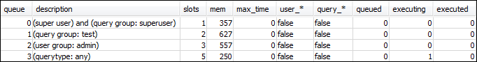
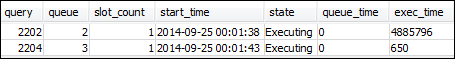
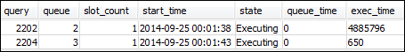

Les traductions sont fournies par des outils de traduction automatique. En cas de conflit entre le contenu d'une traduction et celui de la version originale en anglais, la version anglaise prévaudra.
Section 3 : Acheminement des requêtes vers les files d'attente en fonction des groupes d'utilisateurs et des groupes de requêtes
À présent votre cluster est associé à un nouveau groupe de paramètres et vous avez configuré la gestion de la charge de travail. Ensuite, exécutez quelques requêtes pour voir comment Amazon Redshift achemine les requêtes dans les files d'attente pour le traitement.
Étape 1 : Afficher la configuration de la file d'attente de requêtes dans la base de données
D'abord, vérifiez que la base de données possède la configuration WLM que vous attendez.
Pour afficher la configuration de la file d'attente de requêtes
-
Ouvrez RSQL et exécutez la requête suivante. La requête utilise la vue WLM_QUEUE_STATE_VW que vous avez créée dans Étape 1 : Créer la vue WLM_QUEUE_STATE_VW. Si vous aviez déjà une séance connectée à la base de données avant le redémarrage du cluster, vous devez vous reconnecter.
select * from wlm_queue_state_vw;Voici un exemple de résultat.
Comparer ces résultats à ceux que vous avez reçus dans Étape 1 : Créer la vue WLM_QUEUE_STATE_VW. Notez qu'il y a désormais deux files d'attente supplémentaires. Queue 1 est maintenant la file d'attente du groupe de requêtes de test et Queue 2 la file d'attente du groupe utilisateur administrateur.
Queue 3 est maintenant la file d'attente par défaut. La dernière file d'attente de la liste est toujours la file d'attente par défaut. Elle correspond à la file d'attente vers laquelle les requêtes sont routées par défaut si aucun groupe d'utilisateurs ni groupe de requêtes n'est spécifié dans une requête.
-
Exécutez la requête suivante pour confirmer que votre requête s'exécute maintenant dans la file d'attente 3.
select * from wlm_query_state_vw;Voici un exemple de résultat.

Étape 2 : Exécuter une requête à l'aide de la file d'attente du groupe de requêtes
Pour exécuter une requête à l'aide de la file d'attente du groupe de requêtes
-
Exécutez la requête suivante pour l'acheminer vers le groupe de requêtes
test.set query_group to test; select avg(l.priceperticket*s.qtysold) from listing l, sales s where l.listid <40000; -
Dans l'autre fenêtre RSQL, exécutez la requête suivante.
select * from wlm_query_state_vw;Voici un exemple de résultat.

La requête a été acheminée vers le groupe de requêtes de test, à savoir queue 1 maintenant.
-
Sélectionnez tout à partir de la vue d'état de la file d'attente.
select * from wlm_queue_state_vw;Vous voyez un résultat similaire au suivant.

-
Maintenant, réinitialisez le groupe de requêtes et exécutez la longue requête à nouveau :
reset query_group; select avg(l.priceperticket*s.qtysold) from listing l, sales s where l.listid <40000; -
Exécutez les requêtes sur les vues pour afficher les résultats.
select * from wlm_queue_state_vw; select * from wlm_query_state_vw;Voici quelques exemples de résultats.


Le résultat doit être que la requête s'exécute maintenant dans la file d'attente 3 à nouveau.
Étape 3 : Créer un utilisateur de base de données et un groupe
Avant de pouvoir exécuter des requêtes dans cette file d'attente, vous devez créer le groupe d'utilisateurs dans la base de données et ajouter un utilisateur au groupe. Ensuite, vous vous connectez avec RSQL à l'aide des informations d'identification du nouvel utilisateur et exécutez les requêtes. Vous avez besoin d'exécuter des requêtes comme super-utilisateur, tel qu'utilisateur administrateur, pour pouvoir créer des utilisateurs de base de données.
Pour créer un utilisateur de base de données et un groupe d'utilisateurs
-
Dans la base de données, créez un utilisateur de base de données nommé
adminwlmen exécutant la commande suivante dans une fenêtre RSQL.create user adminwlm createuser password '123Admin'; -
Puis, exécutez les commandes suivantes pour créer le nouveau groupe d'utilisateurs et lui ajouter votre nouvel utilisateur
adminwlm.create group admin; alter group admin add user adminwlm;
Étape 4 : Exécuter une requête à l'aide de la file d'attente du groupe d'utilisateurs
Ensuite, vous exécutez une requête et la routez vers la file d'attente du groupe d'utilisateurs. Vous procédez ainsi lorsque vous souhaitez acheminer votre requête vers une file d'attente configurée pour gérer le type de requête que vous souhaitez exécuter.
Pour exécuter une requête à l'aide de la file d'attente du groupe d'utilisateurs
-
Dans la deuxième fenêtre RSQL, exécutez les requêtes suivantes pour basculer vers le compte
adminwlmet exécuter une requête en tant qu'utilisateur.set session authorization 'adminwlm'; select avg(l.priceperticket*s.qtysold) from listing l, sales s where l.listid <40000; -
Dans la première fenêtre RSQL, exécutez la requête suivante pour voir vers quelle file d'attente les requêtes sont acheminées.
select * from wlm_query_state_vw; select * from wlm_queue_state_vw;Voici quelques exemples de résultats.
 
La file d'attente dans laquelle cette requête a été exécutée est la file d'attente 2, celle de l'utilisateur
admin. Chaque fois que vous exécutez des requêtes en étant connecté sous l'identité de cet utilisateur, elles s'exécutent dans la file d'attente 2, sauf si vous spécifiez un autre groupe de requêtes à utiliser. La file d'attente choisie dépend des règles d'affectation de file d'attente. Pour de plus amples informations, veuillez consulter Règles d’affectation de file d’attente de WLM. -
Maintenant, exécutez la requête suivante à partir de la deuxième fenêtre RSQL.
set query_group to test; select avg(l.priceperticket*s.qtysold) from listing l, sales s where l.listid <40000; -
Dans la première fenêtre RSQL, exécutez la requête suivante pour voir vers quelle file d'attente les requêtes sont acheminées.
select * from wlm_queue_state_vw; select * from wlm_query_state_vw;Voici quelques exemples de résultats.


-
Lorsque vous avez terminé, réinitialisez le groupe de requêtes.
reset query_group;